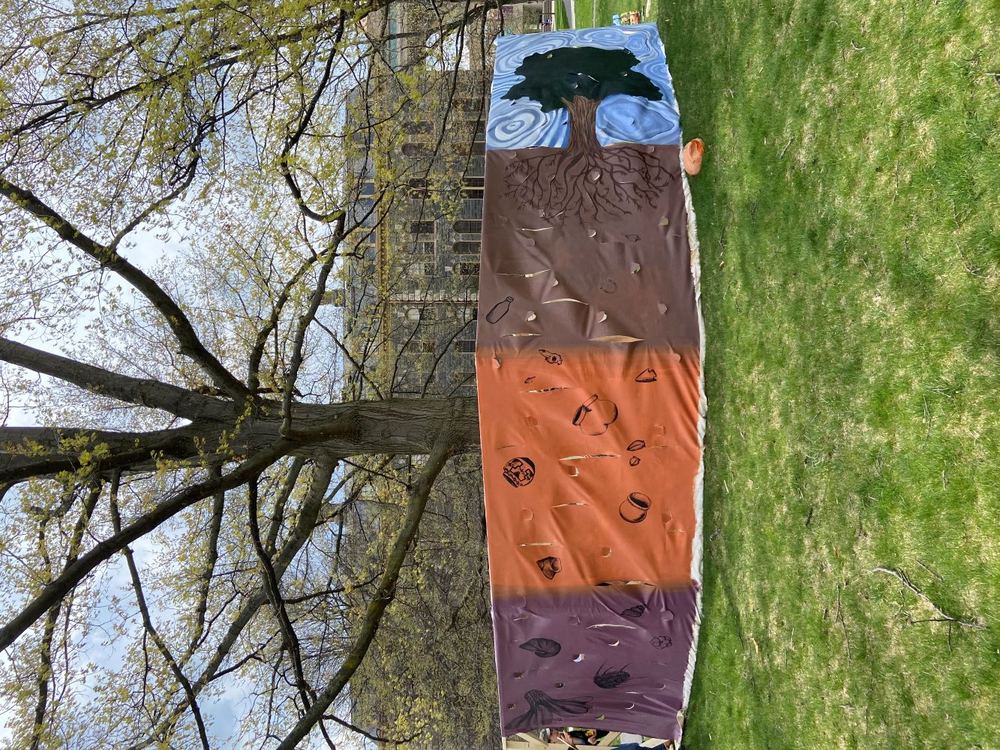

Projects, Papers and Presentations
For my highlighted projects, I wanted to share a variety of projects I have done during my time at Cornell. Although I would love to share details about my projects with RMS and Arcadis, many of these projects are not public information so I cannot discuss them here. If you want to hear more about those experiences, feel free to reach out!

Cornell Engineering Woodchip Bioreactor Project
The research project I supported at Cornell to develop an autonomous woodchip bioreactor to support more effective nitrate removal from waterways.
Learn More
The research project I supported at Cornell to develop an autonomous woodchip bioreactor to support more effective nitrate removal from waterways.
NASA Ignite Talk
At the American Geophyiscal Union Conference in December 2022, I did an Ignite talk about how my woodchip bioreactor could be used as a metaphor for overcoming adversity in the workforce.
Learn More
At the American Geophyiscal Union Conference in December 2022, I did an Ignite talk about how my woodchip bioreactor could be used as a metaphor for overcoming adversity in the workforce.
Digital Design with Microcontrollers Final Project
For my final project with Kidus Zegeye, we made a christmas carolling machine that responded to muscle flexes.
Learn More
For my final project with Kidus Zegeye, we made a christmas carolling machine that responded to muscle flexes.

Cornell Design Team Roots Installation
When I was a member in a Cornell visual design team, we made a large mural installation surrounding a tree to help people reflect on the history of the land Cornell is on.
When I was a member in a Cornell visual design team, we made a large mural installation surrounding a tree to help people reflect on the history of the land Cornell is on.